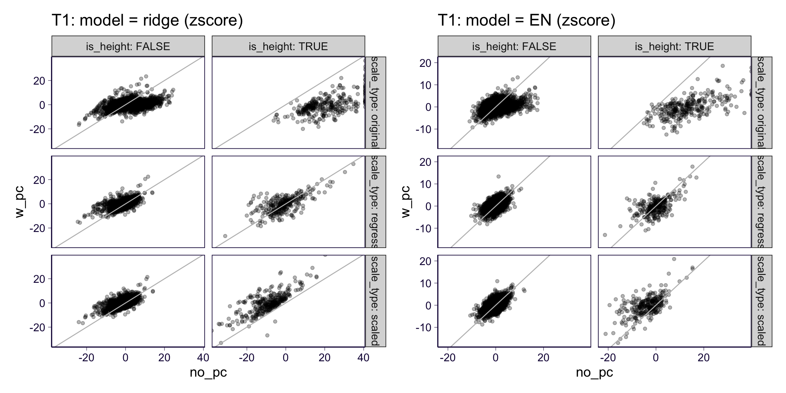

Round 2: S-BrainXcan results of GTEx-GWAS phenotypes
31 December, 2020
rm(list = ls())
library(ggplot2)
theme_set(theme_bw(base_size = 15))
source('https://gist.githubusercontent.com/liangyy/43912b3ecab5d10c89f9d4b2669871c9/raw/3ca651cfa53ffccb8422f432561138a46e93710f/my_ggplot_theme.R')
library(dplyr)
options(stringsAsFactors = F)
library(patchwork)
library(ggrepel)
library(data.table)
options(datatable.fread.datatable = F)
source('rlib.R')
library(VennDiagram)1 About
This is the GTEx-GWAS S-BrainXcan preliminary results of the 2nd round of the BrainXcan. In particular, we run and compare various ways to do phenotype pre-processing. For simplicity, we leave non_idp_covar for the future.
orignal_t1_all_covar_no_pcorignal_t1_all_covar_w_pcscaled_t1_all_covar_no_pcscaled_t1_all_covar_w_pcregress_t1_all_covar_no_pcregress_t1_all_covar_w_pcorignal_dmri_all_covar_no_pcorignal_dmri_all_covar_w_pcregress_dmri_all_covar_no_pcregress_dmri_all_covar_w_pc
2 Load data
traits = read.table('../submission/simagexcan/gtex_gwas_list.txt')$V1
# ridge
types = c('scaled', 'regress', 'original')
models = c('ridge', 'elastic_net')
idps = c('dmri', 't1')
covars = c('all_covar')
pcs = c('no_pc', 'w_pc')
df = list()
for(tt in types) {
for(ii in idps) {
if(ii == 'dmri' & tt == 'scaled') {
next
}
for(cc in covars) {
for(pp in pcs) {
for(mm in models) {
for(rr in traits) {
tmp = paste0('~/Desktop/tmp/ukb_idp/simagexcan/results_gtex_gwas_2nd/', ii, '.', tt, '.', cc, '.', pp, '.gw_', mm, '_beta_x_', rr, '_x_simagexcan.csv')
if(!file.exists(tmp)) {
next
}
df[[length(df) + 1]] = read.csv(tmp) %>%
mutate(scale_type = tt, idp_type = ii, pc_type = pp, covar_type = cc, model = mm, phenotype = rr)
}
}
}
}
}
}
df = do.call(rbind, df)
df = df %>% mutate(zscore = p2z(pval, bhat))
df = df %>% filter(is.na(stringr::str_match(IDP, 'PC')[, 1]))3 T1
p1 = df %>% filter(idp_type == 't1', pc_type == 'no_pc', abs(bhat) < 1) %>% reshape2::dcast(phenotype + scale_type + IDP ~ model, value.var = 'bhat') %>% ggplot() + geom_point(aes(x = ridge, y = elastic_net), alpha = 0.3) + facet_grid(scale_type ~ .) + ggtitle('T1: no PC adjustment (bhat)') + th2 + geom_abline(slope = 1, intercept = 0, color = 'gray')
p2 = df %>% filter(idp_type == 't1', pc_type == 'w_pc', abs(bhat) < 1) %>% reshape2::dcast(phenotype + scale_type + IDP ~ model, value.var = 'bhat') %>% ggplot() + geom_point(aes(x = ridge, y = elastic_net), alpha = 0.3) + facet_grid(scale_type ~ .) + ggtitle('T1: with PC adjustment (bhat)') + th2 + geom_abline(slope = 1, intercept = 0, color = 'gray')
p1 + p2## Warning: Removed 1809 rows containing missing values (geom_point).## Warning: Removed 5395 rows containing missing values (geom_point).p1 = df %>% filter(idp_type == 't1', pc_type == 'no_pc') %>% reshape2::dcast(phenotype + scale_type + IDP ~ model, value.var = 'zscore') %>% ggplot() + geom_point(aes(x = ridge, y = elastic_net), alpha = 0.3) + facet_grid(scale_type ~ .) + ggtitle('T1: no PC adjustment (zscore)') + th2 + geom_abline(slope = 1, intercept = 0, color = 'gray')
p2 = df %>% filter(idp_type == 't1', pc_type == 'w_pc') %>% reshape2::dcast(phenotype + scale_type + IDP ~ model, value.var = 'zscore') %>% ggplot() + geom_point(aes(x = ridge, y = elastic_net), alpha = 0.3) + facet_grid(scale_type ~ .) + ggtitle('T1: with PC adjustment (zscore)') + th2 + geom_abline(slope = 1, intercept = 0, color = 'gray')
p1 + p2## Warning: Removed 684 rows containing missing values (geom_point).## Warning: Removed 3649 rows containing missing values (geom_point).p1 = df %>% filter(idp_type == 't1', pc_type == 'no_pc') %>% reshape2::dcast(phenotype + scale_type + IDP ~ model, value.var = 'pip') %>% ggplot() + geom_point(aes(x = ridge, y = elastic_net), alpha = 0.3) + facet_grid(scale_type ~ .) + ggtitle('T1: no PC adjustment (pip)') + th2 + geom_abline(slope = 1, intercept = 0, color = 'gray')
p2 = df %>% filter(idp_type == 't1', pc_type == 'w_pc') %>% reshape2::dcast(phenotype + scale_type + IDP ~ model, value.var = 'pip') %>% ggplot() + geom_point(aes(x = ridge, y = elastic_net), alpha = 0.3) + facet_grid(scale_type ~ .) + ggtitle('T1: with PC adjustment (pip)') + th2 + geom_abline(slope = 1, intercept = 0, color = 'gray')
p1 + p2## Warning: Removed 684 rows containing missing values (geom_point).## Warning: Removed 3649 rows containing missing values (geom_point).p1 = df %>% filter(idp_type == 't1', model == 'ridge') %>% group_by(scale_type, pc_type) %>% mutate(pexp = rank(pval) / (n() + 1), pval_cap = pmax(pval, 1e-50)) %>% ggplot() + geom_point(aes(x = -log10(pexp), y = -log10(pval_cap), color = scale_type, shape = pc_type)) + th + geom_abline(slope = 1, intercept = 0, color = 'gray') + ggtitle('T1 ridge')
p2 = df %>% filter(idp_type == 't1', model == 'elastic_net') %>% group_by(scale_type, pc_type) %>% mutate(pexp = rank(pval) / (n() + 1), pval_cap = pmax(pval, 1e-50)) %>% ggplot() + geom_point(aes(x = -log10(pexp), y = -log10(pval_cap), color = scale_type, shape = pc_type)) + th + geom_abline(slope = 1, intercept = 0, color = 'gray') + ggtitle('T1 EN')
p1 + p23.1 regress vs scaled
p1 = df %>% filter(idp_type == 't1', pc_type == 'no_pc') %>% reshape2::dcast(phenotype + model + IDP ~ scale_type, value.var = 'zscore') %>% mutate(is_height = phenotype %in% c('GIANT_HEIGHT', 'UKB_50_Standing_height')) %>%
ggplot() + geom_point(aes(x = regress, y = scaled), alpha = 0.3) + facet_grid(model ~ is_height, labeller = label_both) + ggtitle('T1: no PC adjustment (zscore)') + th2 + geom_abline(slope = 1, intercept = 0, color = 'gray')
p2 = df %>% filter(idp_type == 't1', pc_type == 'w_pc') %>% reshape2::dcast(phenotype + model + IDP ~ scale_type, value.var = 'zscore') %>% mutate(is_height = phenotype %in% c('GIANT_HEIGHT', 'UKB_50_Standing_height')) %>%
ggplot() + geom_point(aes(x = regress, y = scaled), alpha = 0.3) + facet_grid(model ~ is_height, labeller = label_both) + ggtitle('T1: with PC adjustment (zscore)') + th2 + geom_abline(slope = 1, intercept = 0, color = 'gray')
p1 + p2## Warning: Removed 456 rows containing missing values (geom_point).## Warning: Removed 1596 rows containing missing values (geom_point).3.2 original vs scaled
p1 = df %>% filter(idp_type == 't1', pc_type == 'no_pc') %>% reshape2::dcast(phenotype + model + IDP ~ scale_type, value.var = 'zscore') %>% mutate(is_height = phenotype %in% c('GIANT_HEIGHT', 'UKB_50_Standing_height')) %>%
ggplot() + geom_point(aes(x = original, y = scaled), alpha = 0.3) + facet_grid(model ~ is_height, labeller = label_both) + ggtitle('T1: no PC adjustment (zscore)') + th2 + geom_abline(slope = 1, intercept = 0, color = 'gray')
p2 = df %>% filter(idp_type == 't1', pc_type == 'w_pc') %>% reshape2::dcast(phenotype + model + IDP ~ scale_type, value.var = 'zscore') %>% mutate(is_height = phenotype %in% c('GIANT_HEIGHT', 'UKB_50_Standing_height')) %>%
ggplot() + geom_point(aes(x = original, y = scaled), alpha = 0.3) + facet_grid(model ~ is_height, labeller = label_both) + ggtitle('T1: with PC adjustment (zscore)') + th2 + geom_abline(slope = 1, intercept = 0, color = 'gray')
p1 + p2## Warning: Removed 342 rows containing missing values (geom_point).## Warning: Removed 1596 rows containing missing values (geom_point).3.3 original vs regress
p1 = df %>% filter(idp_type == 't1', pc_type == 'no_pc') %>% reshape2::dcast(phenotype + model + IDP ~ scale_type, value.var = 'zscore') %>% mutate(is_height = phenotype %in% c('GIANT_HEIGHT', 'UKB_50_Standing_height')) %>%
ggplot() + geom_point(aes(x = original, y = regress), alpha = 0.3) + facet_grid(model ~ is_height, labeller = label_both) + ggtitle('T1: no PC adjustment (zscore)') + th2 + geom_abline(slope = 1, intercept = 0, color = 'gray')
p2 = df %>% filter(idp_type == 't1', pc_type == 'w_pc') %>% reshape2::dcast(phenotype + model + IDP ~ scale_type, value.var = 'zscore') %>% mutate(is_height = phenotype %in% c('GIANT_HEIGHT', 'UKB_50_Standing_height')) %>%
ggplot() + geom_point(aes(x = original, y = regress), alpha = 0.3) + facet_grid(model ~ is_height, labeller = label_both) + ggtitle('T1: with PC adjustment (zscore)') + th2 + geom_abline(slope = 1, intercept = 0, color = 'gray')
p1 + p2## Warning: Removed 456 rows containing missing values (geom_point).## Warning: Removed 1141 rows containing missing values (geom_point).3.4 with PC vs without PC
p1 = df %>% filter(idp_type == 't1', model == 'ridge') %>% reshape2::dcast(phenotype + scale_type + IDP ~ pc_type, value.var = 'zscore') %>% mutate(is_height = phenotype %in% c('GIANT_HEIGHT', 'UKB_50_Standing_height')) %>%
ggplot() + geom_point(aes(x = no_pc, y = w_pc), alpha = 0.3) + facet_grid(scale_type ~ is_height, labeller = label_both) + ggtitle('T1: model = ridge (zscore)') + th2 + geom_abline(slope = 1, intercept = 0, color = 'gray')
p2 = df %>% filter(idp_type == 't1', model == 'elastic_net') %>% reshape2::dcast(phenotype + scale_type + IDP ~ pc_type, value.var = 'zscore') %>% mutate(is_height = phenotype %in% c('GIANT_HEIGHT', 'UKB_50_Standing_height')) %>%
ggplot() + geom_point(aes(x = no_pc, y = w_pc), alpha = 0.3) + facet_grid(scale_type ~ is_height, labeller = label_both) + ggtitle('T1: model = EN (zscore)') + th2 + geom_abline(slope = 1, intercept = 0, color = 'gray')
p1 + p2## Warning: Removed 3877 rows containing missing values (geom_point).
4 dMRI
p1 = df %>% filter(idp_type == 'dmri', pc_type == 'no_pc', abs(bhat) < 1) %>% reshape2::dcast(phenotype + scale_type + IDP ~ model, value.var = 'bhat') %>% ggplot() + geom_point(aes(x = ridge, y = elastic_net), alpha = 0.3) + facet_grid(scale_type ~ .) + ggtitle('dMRI: no PC adjustment (bhat)') + th2 + geom_abline(slope = 1, intercept = 0, color = 'gray')
p2 = df %>% filter(idp_type == 't1', pc_type == 'w_pc', abs(bhat) < 1) %>% reshape2::dcast(phenotype + scale_type + IDP ~ model, value.var = 'bhat') %>% ggplot() + geom_point(aes(x = ridge, y = elastic_net), alpha = 0.3) + facet_grid(scale_type ~ .) + ggtitle('dMRI: with PC adjustment (bhat)') + th2 + geom_abline(slope = 1, intercept = 0, color = 'gray')
p1 + p2## Warning: Removed 4661 rows containing missing values (geom_point).## Warning: Removed 5395 rows containing missing values (geom_point).p1 = df %>% filter(idp_type == 'dmri', pc_type == 'no_pc') %>% reshape2::dcast(phenotype + scale_type + IDP ~ model, value.var = 'zscore') %>% ggplot() + geom_point(aes(x = ridge, y = elastic_net), alpha = 0.3) + facet_grid(scale_type ~ .) + ggtitle('dMRI: no PC adjustment (zscore)') + th2 + geom_abline(slope = 1, intercept = 0, color = 'gray')
p2 = df %>% filter(idp_type == 't1', pc_type == 'w_pc') %>% reshape2::dcast(phenotype + scale_type + IDP ~ model, value.var = 'zscore') %>% ggplot() + geom_point(aes(x = ridge, y = elastic_net), alpha = 0.3) + facet_grid(scale_type ~ .) + ggtitle('dMRI: with PC adjustment (zscore)') + th2 + geom_abline(slope = 1, intercept = 0, color = 'gray')
p1 + p2## Warning: Removed 3246 rows containing missing values (geom_point).## Warning: Removed 3649 rows containing missing values (geom_point).p1 = df %>% filter(idp_type == 'dmri', pc_type == 'no_pc') %>% reshape2::dcast(phenotype + scale_type + IDP ~ model, value.var = 'pip') %>% ggplot() + geom_point(aes(x = ridge, y = elastic_net), alpha = 0.3) + facet_grid(scale_type ~ .) + ggtitle('dMRI: no PC adjustment (pip)') + th2 + geom_abline(slope = 1, intercept = 0, color = 'gray')
p2 = df %>% filter(idp_type == 'dmri', pc_type == 'w_pc') %>% reshape2::dcast(phenotype + scale_type + IDP ~ model, value.var = 'pip') %>% ggplot() + geom_point(aes(x = ridge, y = elastic_net), alpha = 0.3) + facet_grid(scale_type ~ .) + ggtitle('dMRI: with PC adjustment (pip)') + th2 + geom_abline(slope = 1, intercept = 0, color = 'gray')
p1 + p2## Warning: Removed 3246 rows containing missing values (geom_point).## Warning: Removed 13539 rows containing missing values (geom_point).
p1 = df %>% filter(idp_type == 'dmri', model == 'ridge') %>% group_by(scale_type, pc_type) %>% mutate(pexp = rank(pval) / (n() + 1), pval_cap = pmax(pval, 1e-50)) %>% ggplot() + geom_point(aes(x = -log10(pexp), y = -log10(pval_cap), color = scale_type, shape = pc_type)) + th + geom_abline(slope = 1, intercept = 0, color = 'gray') + ggtitle('dMRI ridge')
p2 = df %>% filter(idp_type == 'dmri', model == 'elastic_net') %>% group_by(scale_type, pc_type) %>% mutate(pexp = rank(pval) / (n() + 1), pval_cap = pmax(pval, 1e-50)) %>% ggplot() + geom_point(aes(x = -log10(pexp), y = -log10(pval_cap), color = scale_type, shape = pc_type)) + th + geom_abline(slope = 1, intercept = 0, color = 'gray') + ggtitle('dMRI EN')
p1 + p24.1 regress vs original
p1 = df %>% filter(idp_type == 'dmri', pc_type == 'no_pc') %>% reshape2::dcast(phenotype + model + IDP ~ scale_type, value.var = 'zscore') %>% mutate(is_height = phenotype %in% c('GIANT_HEIGHT', 'UKB_50_Standing_height')) %>%
ggplot() + geom_point(aes(x = regress, y = original), alpha = 0.3) + facet_grid(model ~ is_height, labeller = label_both) + ggtitle('T1: no PC adjustment (zscore)') + th2 + geom_abline(slope = 1, intercept = 0, color = 'gray')
p2 = df %>% filter(idp_type == 'dmri', pc_type == 'w_pc') %>% reshape2::dcast(phenotype + model + IDP ~ scale_type, value.var = 'zscore') %>% mutate(is_height = phenotype %in% c('GIANT_HEIGHT', 'UKB_50_Standing_height')) %>%
ggplot() + geom_point(aes(x = regress, y = original), alpha = 0.3) + facet_grid(model ~ is_height, labeller = label_both) + ggtitle('T1: with PC adjustment (zscore)') + th2 + geom_abline(slope = 1, intercept = 0, color = 'gray')
p1 + p2## Warning: Removed 1122 rows containing missing values (geom_point).## Warning: Removed 1627 rows containing missing values (geom_point).4.2 with PC vs without PC
p1 = df %>% filter(idp_type == 'dmri', model == 'ridge') %>% reshape2::dcast(phenotype + scale_type + IDP ~ pc_type, value.var = 'zscore') %>% mutate(is_height = phenotype %in% c('GIANT_HEIGHT', 'UKB_50_Standing_height')) %>%
ggplot() + geom_point(aes(x = no_pc, y = w_pc), alpha = 0.3) + facet_grid(scale_type ~ is_height, labeller = label_both) + ggtitle('dMRI: model = ridge (zscore)') + th2 + geom_abline(slope = 1, intercept = 0, color = 'gray')
p2 = df %>% filter(idp_type == 'dmri', model == 'elastic_net') %>% reshape2::dcast(phenotype + scale_type + IDP ~ pc_type, value.var = 'zscore') %>% mutate(is_height = phenotype %in% c('GIANT_HEIGHT', 'UKB_50_Standing_height')) %>%
ggplot() + geom_point(aes(x = no_pc, y = w_pc), alpha = 0.3) + facet_grid(scale_type ~ is_height, labeller = label_both) + ggtitle('dMRI: model = EN (zscore)') + th2 + geom_abline(slope = 1, intercept = 0, color = 'gray')
p1 + p2## Warning: Removed 14503 rows containing missing values (geom_point).5 Look into Schizophrenia
df_scz = df %>% filter(phenotype == 'pgc.scz2')
df_scz = df_scz %>% group_by(model, scale_type, idp_type, pc_type) %>%
mutate(p_adj = pval * n()) %>% ungroup()
df_scz_signif = df_scz %>%
filter(p_adj < 0.05 | cs95 > 0)
# df_scz_signif %>% group_by(model, scale_type, idp_type, pc_type) %>% summarize(n())sig_list = list()
for(i in idps) {
sig_list[[i]] = list()
for(m in models) {
for(s in types) {
for(p in pcs) {
sig_list[[i]][[paste0(m, '_x_', p)]] = df_scz_signif %>% filter(idp_type == i, pc_type == p, scale_type == s, model == m) %>% pull(IDP)
}
}
}
}
for(i in idps) {
o = venn.diagram(
x = sig_list[[i]],
filename = paste0('../figures/venn_pgc.scz2.', i, '.png'),
main = paste0('venn_pgc.scz2.', i)
)
}

Focus on IDP-25361: Mean ICVF in anterior limb of internal capsule on FA skeleton (left)
alic_idp = 'IDP-25361'
df_scz %>% filter(IDP == alic_idp) %>% select(-phenotype, -covar_type, -idp_type, -IDP, -p_adj)## # A tibble: 8 x 8
## bhat pval pip cs95 scale_type pc_type model zscore
## <dbl> <dbl> <dbl> <dbl> <chr> <chr> <chr> <dbl>
## 1 0.0251 2.84e- 2 0.00310 -1 regress no_pc ridge -2.19
## 2 0.0122 2.93e- 1 0.00234 -1 regress no_pc elastic_net -1.05
## 3 -0.0580 7.97e- 5 0.00181 -1 regress w_pc ridge 3.95
## 4 -0.149 1.70e-10 0.961 1 regress w_pc elastic_net 6.39
## 5 0.0251 2.86e- 2 0.00413 -1 original no_pc ridge -2.19
## 6 0.0120 2.97e- 1 0.00245 -1 original no_pc elastic_net -1.04
## 7 -0.0600 4.46e- 5 0.0289 -1 original w_pc ridge 4.08
## 8 -0.154 3.16e-11 1.00 1 original w_pc elastic_net 6.64